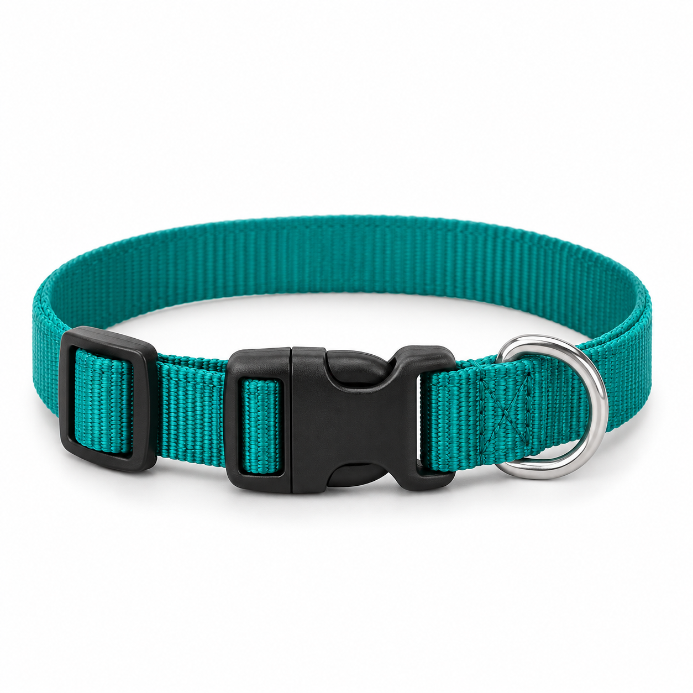
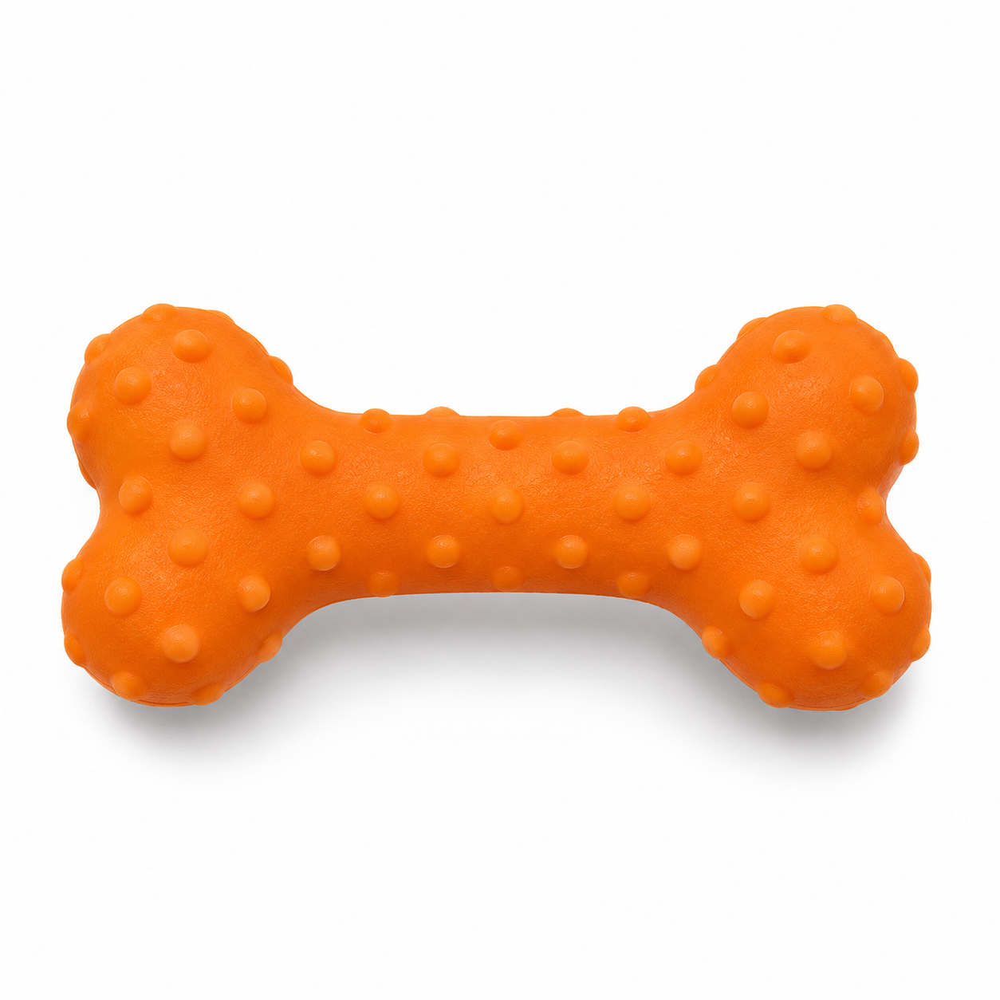
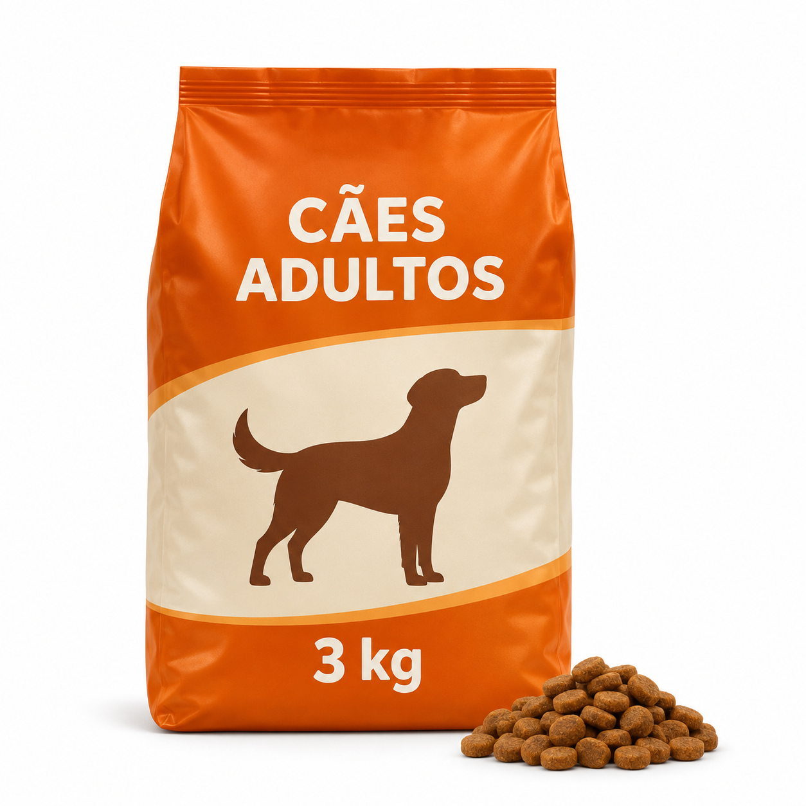
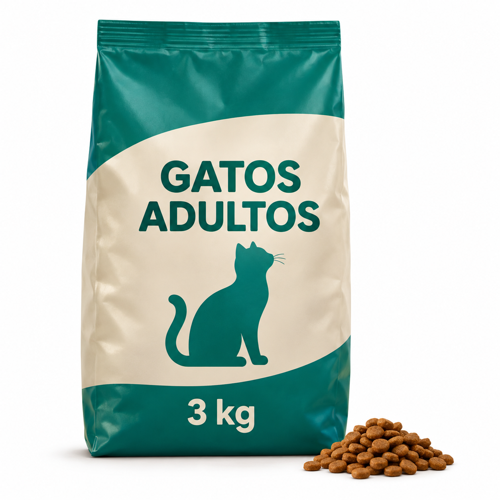
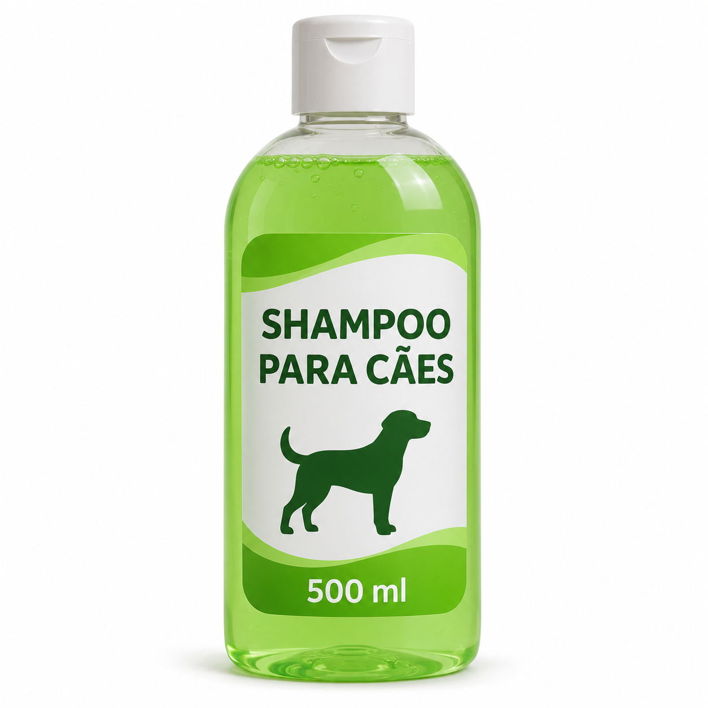
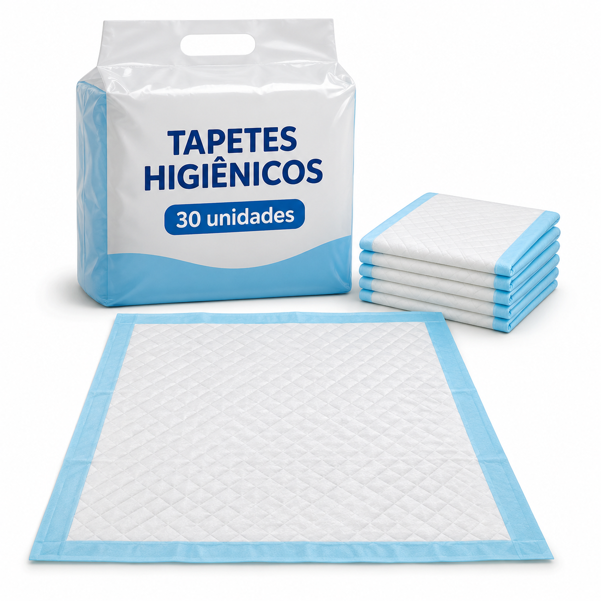

Coleira ajustável para cães

Coleira de nylon com regulagem de tamanho, fecho de encaixe e argola para prender a guia. Um acessório para os passeios do cão com seu tutor.
Preço: R$ 39,90
Mundo das Patas — Petshop
Carinho e cuidado para o dia a dia do seu pet.
Explore nosso catálogo de acessórios, rações não perecíveis e produtos de higiene e limpeza para o seu pet.

Coleira de nylon com regulagem de tamanho, fecho de encaixe e argola para prender a guia. Um acessório para os passeios do cão com seu tutor.
Preço: R$ 39,90

Brinquedo de borracha em formato de osso, com textura na superfície, para momentos de brincadeira e interação com o cão.
Preço: R$ 24,90

Ração seca em grãos para cães adultos, em embalagem de 3 kg. Produto não perecível para a alimentação diária, que deve ser armazenado em local seco e com a embalagem fechada.
Preço: R$ 69,90

Ração seca em grãos para gatos adultos, em embalagem de 3 kg. Produto não perecível para a alimentação diária, que deve ser armazenado em local seco e com a embalagem fechada.
Preço: R$ 79,90

Shampoo de uso externo destinado à limpeza da pelagem dos cães durante o banho. Apresentado em frasco de 500 ml com tampa dosadora.
Preço: R$ 29,90

Pacote com 30 tapetes higiênicos descartáveis, com superfície absorvente e base impermeável, para organizar o espaço de higiene do pet em ambientes internos.
Preço: R$ 49,90